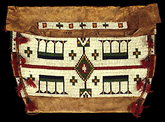

|
Art of the Americas | |
|
(c) |
Lakota |
|
Visit Art of the Americas, the first of the newly created
galleries of the reinstallation project. Here you can study
objects made by native peoples of North, Central and South
America from ancient to modern times. This collection
includes an interactive
program. | |